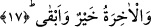
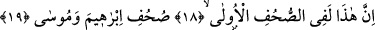

17. Oysa âhiret daha hayırlı ve daha kalıcıdır.
Bu ifâde yukarda yer alan ve “tercih ediyorsunuz” anlamına gelen “tu’sirûne” fiilinin
fâilinden hal-i müekkide’dir. Bu hal Allah’ın azarlama ve itabını pekiştirmektedir. Buna
göre âyetin mânâsı siz dünya hayatını âhirete tercih ediyorsunuz. Oysa âhiret başlı
başına daha hayırlıdır. Çünkü âhiret nimetleri son derece lezzetli olmasının yanında en
küçük bir keder şaibesinden uzaktır. Ayrıca ebedidir ve bitip tükenmek diye birşey
yoktur. Dünya nimetinin ise bulanık olup insanı mutlu edemeyeceğine bir gün gelip
kesileceğine işâret ve beyân edilmemesi bu gerçeğin son derece açık ve net olmasından
dolayıdır.
Âyette eşyanın hakikatlerine nispetle dışa vuran yüzü tanenin özüne nispetle
üzerindeki kabuk mesâbesinde olduğuna; özün kabuktan daha hayırlı ve daha kalıcı
olduğuna işâret edilmektedir. Çünkü tanenin özü uzun zaman muhafaza edilir. Kabuğu
ise özden soyulduğunda ateşe atılır ya da çöpe bırakılır. Çöpe atılan bu kabuk iki gün,
bilemedin üç gün sonra çürüyüp yok olur. Kabuğa takılanlar dâima fani olan değersiz
zâhirî şeyleri tercih ederler. Bunları bâtınî, mânevi, şerefli, aziz, baki olan şeylerden
daha üstün tutarlar. Çünkü onlar âhireti göremeyecek derecede mahrum olan
kimselerdir. Buna karşılık özü tercih edenler âhireti tercih ederler. Hatta en son kalacak
olan Allah’ı tercih ederler. Nitekim Allah Teâlâ bu gerçeğe bir âyet-i kerimede şöyle
değinir: “(Rasûlüm) sen “Allah” de, sonra onları bırak daldıkları bataklıkta oynaya
dursunlar!” (En-am, 6/91)
Bazı âlimlerin ifâdesine göre “elbette felaha ermiştir temizlenen” âyetindeki
“temizlenen” kelimesinden maksad günahlarına tevbe eden demektir. “Rabbinin adını
anan” ifâdesinden maksad ise ezanı işittiğinde namaza çıkan demektir. Sonra cemaatle
namaz kılmayı dünya işleriyle meşgul olduğu için terkeden kimse kınanmakta ve onların
bu davranışı kasdedilerek “fakat siz dünya hayatını tercih ediyorsunuz” denmektir.
Bunun anlamı yâni siz dünya işlerini âhiret işine tercih ediyorsunuz oysa âhiret işi dünya
amelinden daha hayırlı ve daha kalıcıdır. Ayrıca âhiret işi dünya ile ve dünyanın
zînetiyle meşgul olmaktan da daha hayırlıdır.
18. Doğrusu bunlar (bu anlatılanlar) ilk sahifelerde
19. İbrahim ve Mûsâ’nın sahifelerinde de vardır.
“Doğrusu bunlar” ifâdesiyle “elbette felaha ermiştir temizlenen” ifâdesinde